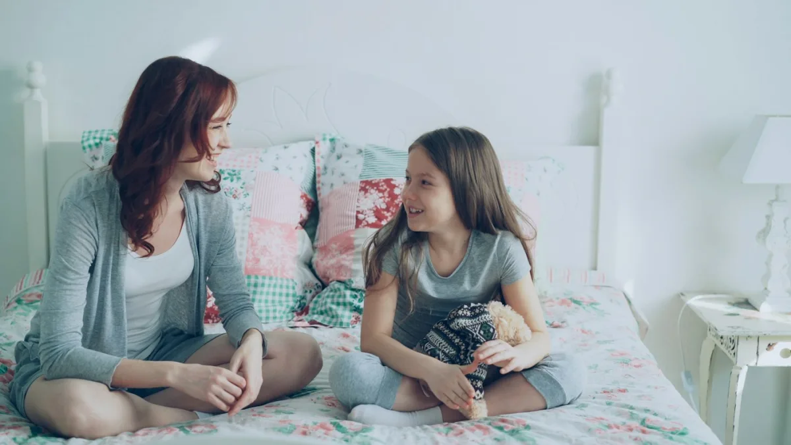

For families trying to understand borderline personality disorder.
Borderline personality disorder makes emotions land bigger and pass slower than they do for most people. For the family around someone with BPD, that can feel like standing on ground that shifts without warning.
A licensed therapist is still the right call for an actual diagnosis. These three free guides exist to help your family talk about what's happening long before you get there. One of them is written for the person living with it.
What the research actually shows
Two different things worth knowing: what BPD is, and how hard it is to get help for it in Arkansas. Every figure below is sourced at the bottom of the page.
What BPD is
5 of 9
criteria required
A diagnosis needs at least five of nine criteria, which is why two people with the same diagnosis can look nothing alike.See reference 1
4× higher
rate of death by suicide
5.9% among people with BPD, against 1.4% among people with other personality disorders.See reference 2
1980
first named in the DSM
BPD was not a formal diagnosis until the DSM-III, part of why so many families went years without a word for it.See reference 3
The Arkansas context
These numbers are about mental health in Arkansas generally, not about BPD specifically. They are here because they describe the gap these guides are trying to partly fill: a shortage of licensed therapists, cost, distance, and stigma all sit between families and a real diagnosis.
-
45th of 51
Arkansas's overall ranking for mental health across the 50 states and DC.See reference 4
-
30.8%
Nearly one in three Arkansans report clinically significant depressive symptoms. 140 census tracts exceed 40%, and close to a third of those are rural.See reference 5
-
~125,000
Arkansas adults living with a serious mental illness.See reference 6
What it looks like at home
Someone with BPD can swing between adoring you and being furious with you in the same afternoon, terrified underneath it that you're about to leave. That's not a choice.
It's also not something families are equipped to untangle without some help.


Meet Marley
This project started with one family trying to make sense of a diagnosis.
Marley grew up inside a family where emotions ran high and nobody had a word for why. That question led her to spend a summer buried in clinical research on BPD, and to build the three guides on this page for other families doing the same thing hers did.
Three free guides
Download the overview first. Then pick the second guide based on your seat at the table.
01
Start here
BPD Overview
What borderline personality disorder is, where it tends to come from, and why it looks different from person to person.
Download the BPD Overview PDF02
If it might be you
So (You Think) You Have BPD?
For readers wondering if these patterns describe them, and where to go from here.
Download the guide for people who think they have BPD PDF03
If it might be someone you love
So Someone You Love (Might Have) BPD?
For readers watching someone they love go through it, from the outside looking in.
Download the guide for loved ones PDFBPD is treatable. That's newer than you'd think.
Dialectical behavior therapy, developed for BPD in the early 1990s, has the strongest evidence base of any treatment built specifically for it.See reference 3 Families can learn the same skills. Family Connections, a program that adapts DBT for relatives, has been trialed with 121 family members, with promising but not yet conclusive results on caregiver burden.See reference 7
You are not responsible for regulating someone else's emotions.
You are in a position to understand it better than you did five minutes ago. Start with the overview above.
Ready to start making sense of it?
Thanks for reading this far. However this looks for your family, we hope it helps somewhere.
Get the free guidesWorks cited
- American Psychiatric Association. (2022). Diagnostic and statistical manual of mental disorders (5th ed., text rev.), p. 752. ↑
- Leichsenring, F., Fonagy, P., Heim, N., Kernberg, O. F., Leweke, F., Luyten, P., Salzer, S., Spitzer, C., & Steinert, C. (2024). Borderline personality disorder: A comprehensive review of diagnosis and clinical presentation, etiology, treatment, and current controversies. World Psychiatry, 23(1), 4–25. https://doi.org/10.1002/wps.21156 ↑
- Linehan, M. M. (1993). Cognitive-behavioral treatment of borderline personality disorder. Guilford Press. ↑
- Mental Health America. The state of mental health in America: Ranking the states. mhanational.org ↑
- University of Arkansas. (2025, December 17). Nearly one in three Arkansans report symptoms of depression. Reporting results of the Arkansas Health Survey, Arkansas Health Equity and Access Lab. news.uark.edu ↑
- National Alliance on Mental Illness. Arkansas state fact sheet. nami.org ↑
- Guillén, V., Fernández-Felipe, I., Marco, J. H., Grau, A., Botella, C., & García-Palacios, A. (2024). “Family Connections,” a program for relatives of people with borderline personality disorder: A randomized controlled trial. Family Process, 63(4), 2195–2214. https://doi.org/10.1111/famp.13089 ↑